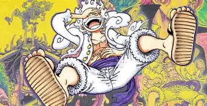

O protagonista principal! Luffy sonha em se tornar o Rei dos Piratas. Inspirado por Shanks desde a infância, ele comeu a Gomu Gomu no Mi, transformando seu corpo em borracha. Luffy é conhecida pela sua determinação inabalável, liderança e capacidade de unir pessoas em torno de seus ideais. Ele enfrenta inimigos cada vez mais poderosos enquanto viaja pelo Grand Line com sua tripulação dos Chapéus de Palha.